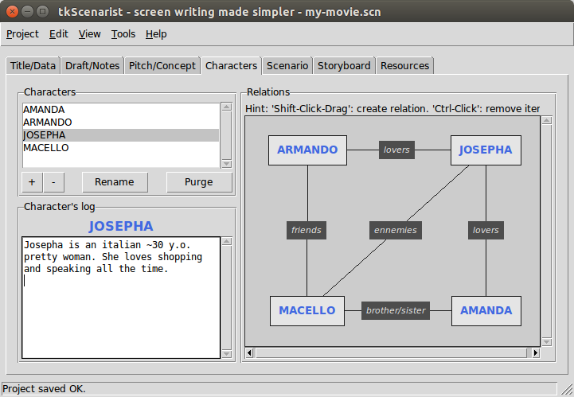

Return to summary.
This app tab is made of a form and some stats data. It allows setting up project's title, subtitle and more.
Each form entry is quite optional, but people willing to make professional documents may certainly fill out all of the form, entirely.
Some stats data may show up at the bottom of this app tab along with project's progress status.
Please, note these data are only estimations, they do NOT reflect any reality.
You will find more accurate data while exporting your project into some PDF® documents.
Return to summary.
Click on each form entry (white zone) and type any relevant data you need for your project.
Form entries are one-line editing zones: it is NOT possible to use carriage return on them.
Double-clicking on a word will select this word only.
Triple-clicking on a word will select the whole line.
You may select all text in a form entry either by using Edit > Select
all menu option or with <Ctrl-A> keyboard shortcut.
Any selection band is likely to be replaced by the next keystroke on the keyboard.
Return to summary.
IMPORTANT: don't forget to save your project regularly, either
with Project > Save menu option or with <Ctrl-S> keyboard shortcut.
Return to summary.
Return to homepage.